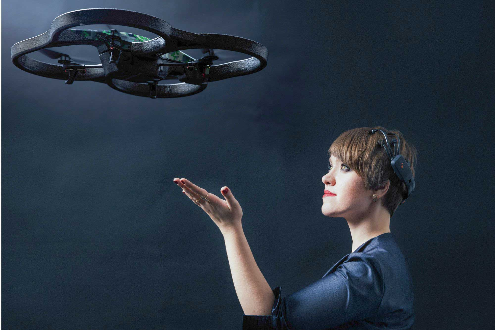

Pouvoir contrôler un drone par la pensée
11/11/2020 - 15:52 - mise à jour 11/11/2020 - 00:15

Neuralink permet de contrôler des membres du corps, mais il existe aussi une technologie plus vieille
permettant de contrôler des objets par la pensée.
Une jeune chercheuse nommée Nataliya Kosmyna a développé un logiciel permettant de contrôler un drone
par la pensée grâce à un système d'électro-encéphalogramme (EEG) posé sur le crâne. Nous pouvons de
nos jours contrôler n’importe quoi grâce à nos pensées : Un pic d'activité cérébrale déclenche un pic
électrique.
Le pic d'activité cérébrale est différent chez chacun (par exemple, deux personnes qui pensent à un chat
émettent des signaux très différents), donc faire un programme qui marche sur tout le monde est
impossible.
Selon Kataliya Kosmyna, faire voler un drone avec la pensée est à la portée de n’importe quel testeur.
Le drone fonctionne facilement : pour le faire décoller, il suffit de penser à un nuage; pour rester
fixe, faire le vide dans la tête; tourner à droite, penser à faire un mouvement de la main droite, et
pareil pour tourner à gauche.
L’idée principale de cette chercheuse, c’est d’aider les personnes à mobilité réduite dans la vie de
tous les jours : si il pense à allumer la lumière, elle s'allume , à ouvrir ou fermer les volets, ils
le font, et de même pour les portes et pour bien d'autres actions...
Elle ne va pas cependant pas chercher à faire bouger des prothèses, car des casques aussi précis coûtent plusieurs centaines de milliers d’euros (contrairement au casque qu’elle utilise qui coûte seulement 300 euros (casque 5 électrodes, sinon 800 euros pour les 14 électrodes) là où Neuralink sera plus abordable et plus précis).